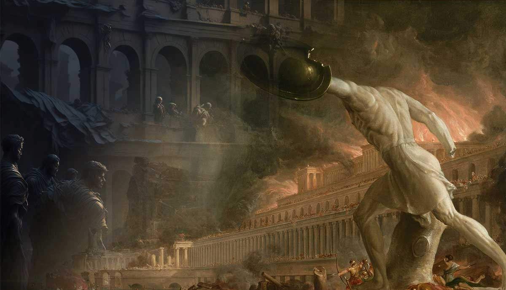

Europa traces her roots to the first steps of the Greco-Roman civilisation. The ever ambitious Greek city-states and the rapidly expanding Rome joined hands in the Roman Empire. Although officially one entity, there was an unspoken division permeating the Empire. The West was to be civilised by Rome, and the East by Hellas. At its zenith, Rome was a formidable power, the mere mention of it's name enough to make nations tremble. However, Empires rise and Empires fall. Corruption and inflation gripped the common Romans while the elites were preoccupied in their palaces. Decadence set in the Roman elites, who had maintained their power through extensive noble families, instead of their own abilities. Offices within the empire towards the end had become essentially hereditary. The new religion of Christianity clashed in all aspects of Roman life with the traditional Roman pantheon, eager to take their revenge for the persecution of early Christians by the pagan Roman Emperors.
Add to this the repeated Germanic and Slavic invasions of the Roman border provinces of Pannonia, Dacia, Gaul, and Rhaetia, and Rome was impossible for one Emperor to manage, no matter how capable. This forced the partition of the Roman Empire by the Emperor Diocletian in 285AD, in order to provide better governance for individual regions. However, this step was extremely delayed and thus could not reverse the fall of the Roman Empire. Since then, Europa had fallen in the hands of various Germanic barbarians, like the Visigoths, the Ostrogoths, the Vandals, and the Anglo-Saxons. These were the European Dark Ages, and they had just begun. For centuries, Europe languished behind the glorious Muslim world, which had since entered a Golden Age .
All of this led to a longing for the past, which was seen by the European intellectuals of the 15th century as a Golden Age, buried deep in the annals of history. Sculpting was one such field. Roman sculptures had been the epitome of Roman culture, a mark of Roman craftsmanship, seen as an icon of an era long gone by many. The Christians of the Empire had seen these sculptures as a symbol of the Roman Orthodoxy that had mercilessly persecuted them. Add to this the Christian belief in one God, who is beyond depiction by humans, and the magnificent sculptures were seen as comparing Roman Emperors to Gods. Hence commenced a period of Iconoclasm whereby countless sculptures were destroyed or defaced and sculpting as an art became a taboo in society.
However, the cultural influence of Rome could not be understated, especially in Northern Italy, which had since splintered into wealthy city-states and small kingdoms, under the suzerainty of the Holy Roman Empire. Wealthy families, like the Medicis of Florence, were patrons of the arts and would commission skilled artisans to create pieces of art for them. Some famous artists commissioned by the Medicis included Donatello, Brunelleschi, Botticelli, Raphael, Michelangelo, and the greatest of them all, Leonardo da Vinci. These artists created for them paintings, frescoes, sculptures and even the Dome of the Florence Cathedral.
This renewed appreciation of the arts led to artists in Europe to reminisce about the Golden Age of Rome, where arts once flourished, and scientific temperament was rewarded. They began to look to the past to find inspiration for the present. As the rigidity of Catholicism was beginning to wane, creative and scientific intellectuals were once again free to think, free to reason, free to dream. This freedom allowed some of the greatest minds in Europa to flourish, and technologies like the printing press, mechanical clocks, the steam engine and the telescope were brought into this world. Who knows how or world might look likee today had it not been for these innovations. The Renaissance is not some long gone era; the curiosity at it's heart is still breathing within all of us.